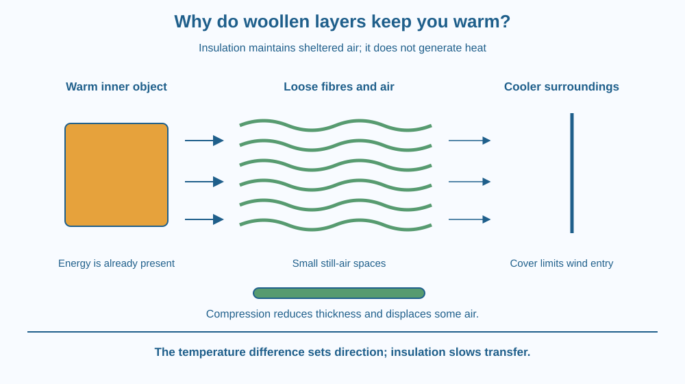

Explain why loose woollen layers can slow cooling. Identify the role of trapped air, distinguish insulation from heat production, and predict why compression or wetting can change a garment's performance. Your explanation should work for a warm person and for a warm container.
On a cold morning, a sweater feels comforting even though it has no heater inside. Place that same sweater over a chair, and the chair does not become a source of warmth. Put your hand between loosely folded layers and you can feel how much space the fibres create.
The useful question is not whether wool contains a secret supply of heat. It is how the garment changes the rate at which energy leaves something already warmer than its surroundings. The arrangement of fibres and air helps answer that question.
A person's body releases thermal energy as part of its ordinary functioning. In a colder environment, energy tends to transfer outward. An insulator slows this transfer; it does not create energy. A sweater helps by changing the barrier between skin and surroundings.
Wool fibres are often crimped rather than perfectly straight. Their arrangement can hold many small pockets of air. Air conducts heat much less readily than many solid materials used in utensils. Keeping air in small, relatively still spaces therefore adds resistance to heat transfer.
A large open air space is not equivalent to many small protected pockets. In a wide space, air can circulate and replace warmed air with cooler air. Among close fibres, much of this bulk movement is restricted. Insulation depends on both the material and the organisation of the air spaces.
Thickness matters because a thicker protected layer increases the distance across which heat must transfer. Two loose layers may provide more useful air space than one thin layer. However, the result depends on fit, compression, wind and moisture. There is no universal rule that a fixed number of garments suits everyone.
If you press a fluffy layer firmly, its thickness decreases and some trapped air is displaced. You have changed the structure that provided insulation. A tightly compressed garment can perform differently from the same garment when it remains lofted.
Wind can push cooler air through openings and disturb the warm air near the body. A reasonably wind-resistant outer layer can therefore complement an insulating inner layer. The outer layer's job differs from the inner layer's job: one limits air exchange, while the other provides sheltered air spaces.
Water also changes the system. It can replace air in spaces and increase heat transfer through parts of the fabric. Evaporation from damp clothing can contribute to cooling. Wool has complex moisture behaviour, so “wet wool has no insulation” is too absolute. The reliable lesson is that wetting changes heat transfer and comfort.
Insulation slows temperature change in either direction. A wrap around a cool bottle can slow warming when the room is warmer than the bottle. The wrap is not choosing to make everything hot; it resists energy transfer between different temperatures.
Draw a warm rectangle for a person and a cooler border for the surroundings. Between them, draw two versions of a fabric layer. Give the first many sheltered air pockets. Draw the second flattened so its pockets are smaller and the layer thinner.
Put outward energy arrows across both drawings. Use smaller arrows for the more insulating arrangement, while remembering that arrow size is only a comparison, not measured data.
Then place a cool bottle inside the same diagram and reverse the energy arrows. The direction comes from the temperature difference. The insulation changes the rate, regardless of direction.
The SVG shows a warm inner object, a loose fibre layer and cooler surroundings. Small spaces between wavy fibres represent sheltered air. Energy arrows cross the layer toward the outside.
A separate compressed patch has less thickness and less room for air. Labels explain the structural change rather than claiming an exact improvement. A final symbol shows an outer cover reducing wind penetration.
The drawing is an enlarged section through fabric. Real fibres are much smaller, and their arrangement is irregular. No colour in the drawing represents a measured temperature.

In colder parts of India, people often use several clothing layers. A loose insulating layer and an outer layer that limits wind can solve different parts of the same problem. The system must still allow comfortable movement and suitable moisture management.
Quilts and padded jackets also make use of air held within a fibrous structure. Their filling does more than add weight: it maintains thickness and partitions air into smaller spaces. Flattened filling can create patches where heat transfers more readily.
A blanket wrapped around a warm tiffin works by slowing heat loss. It cannot reheat food that has already cooled to the temperature of the room.
Use two similar closed cups or bottles, comfortably warm water and a dry folded woollen cloth. Do this with an adult. Avoid hot water and glass containers that could crack.
Five minutes sets up a comparison; a clearly detectable difference may require longer. Touch alone is not an accurate temperature measurement. Keep the containers in the same location so a draught or sunny patch does not become an extra difference.
Suppose a blanket is placed around two identical bottles: one warmer than the room and one cooler. Predict the direction of energy transfer for each. Then explain how the blanket could slow both changes.
Would it make sense to describe the blanket as “giving cold” to the cool bottle? Use the two cases to replace that phrase with a description based on transfer rate and temperature difference.
What helps loose woollen layers provide insulation?
Answer: B — The fibres maintain relatively still air spaces that resist heat transfer.
Why can pressing a fluffy layer change its insulation?
Answer: A — Flattening changes the sheltered air spaces and distance across the insulating layer.
A wrapped bottle is colder than the room. What can the wrap do?
Answer: C — Insulation resists transfer; the temperature difference sets its direction.
Design a clothing system for a windy school sports practice in cool weather. Label an inner layer, an insulating layer and an outer cover. Explain what each contributes without claiming that more clothing is always better.
Include a decision about keeping the insulating layer loose enough to retain thickness. Explain how your design might need adjustment when activity increases or the clothes become damp.
The useful material inside a fluffy jacket is partly the air that its filling keeps organised. A heavy solid sheet can weigh much more without providing the same insulation. Weight, thickness and insulation are related only through the structure and materials involved; they are not interchangeable measures of warmth.
Woollen layers slow heat transfer by maintaining sheltered air spaces; they conserve existing warmth rather than manufacture heat.